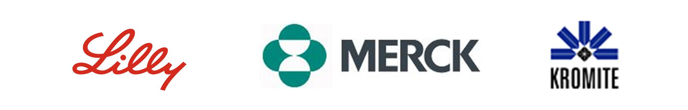

| |||||||
Shared Decision Making Summit
Shared Decision MakingShared decision making (SDM) is a collaborative process that allows patients and their providers to make health care decisions together, taking into account the best scientific evidence available, as well as the patient's values and preferences.  
SDM SummitThe Summit is different than a standard conference. While Shared Decision Making is the overarching theme, rather than a micro-focus on the interactions between patients and their health care providers, the Summit takes a macro-focus of how to enable and support SDM broadly, across all of healthcare. Our objective is to enable and support the widespread adoption of Shared Decision Making, creating a "win" for everyone. We recognize the power that a group of organizations can collectively wield in breaking down barriers and building bridges. Part brainstorming, part prioritizing, and part defining & structuring, the target outputs of the Summit are ideas that are scoped and fleshed out enough to be ready for project initiation. QuestionsFor answers to questions about the Summit, please contact Tyler Ludlow. Tyler is a Board Member of SDP, a member of SMDM, and a Senior Decision Scientist at Eli Lilly and Company. Sponsors
| |||||||